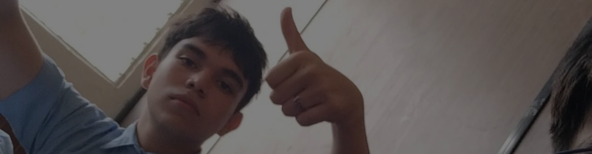

Formando técnicos EXITOSOS.
Descubre el emocionante mundo de la educación primaria en el Instituto Emiliani Somascos, sede San Pedrito, zona 05 Ciudad de Guatemala. Ofrecemos un ambiente educativo enriquecedor y estimulante para los alumnos en su fase inicial de aprendizaje. Nuestro equipo docente altamente capacitado está comprometido en brindar una educación de calidad que desarrolle habilidades clave y siente las bases para el éxito futuro de cada estudiante. Para más información visita nuestra página San Pedrito.
Los niños inician su aventura escolar con un enfoque en desarrollar habilidades básicas en lectura, escritura y matemáticas. Se les introduce a conceptos fundamentales en un ambiente estimulante, fomentando la curiosidad y el amor por el aprendizaje.
Más información#SomosSomascos
Los estudiantes consolidan sus conocimientos y comienzan a explorar temas más complejos en matemáticas, ciencias y lengua. Se enfoca en el desarrollo de habilidades de pensamiento crítico y resolución de problemas, preparándolos para desafíos académicos futuros.
Más información#SomosSomascos
Los alumnos profundizan en áreas clave como matemáticas, ciencias y lenguaje, y fortalecen su capacidad para pensar de manera independiente. Se preparan para la transición a secundaria, desarrollando habilidades avanzadas y una mayor responsabilidad académica.
Más información#SomosSomascos
En el ciclo de Básico, ofrecemos una educación equilibrada en diversas
áreas del conocimiento, como Matemáticas, Lenguaje, Ciencias y
Estudios Sociales. Nuestro plan de estudios fortalece habilidades de
pensamiento crítico, resolución de problemas y comunicación efectiva,
asegurando que los estudiantes adquieran un conocimiento sólido.
Conocenos en nuestras 3 sedes:
Los estudiantes refuerzan sus bases académicas y se introducen a conceptos más avanzados en ciencias, matemáticas y lenguaje. Este año se centra en desarrollar habilidades críticas y organizativas, preparándolos para una educación secundaria más rigurosa.
Más información#SomosSomascos

Los alumnos profundizan en el contenido académico y fortalecen sus habilidades en análisis y resolución de problemas. Se les prepara para los retos educativos futuros, consolidando conocimientos y promoviendo la autonomía y la responsabilidad.
Más información#SomosSomascos

Los estudiantes continúan avanzando en materias clave, con un enfoque en habilidades analíticas y críticas. Este año es crucial para consolidar sus conocimientos y prepararse para los desafíos de los últimos años de secundaria y su futura educación superior.
Más información#SomosSomascos
¡Expande tus horizontes y prepárate para una carrera exitosa con
nuestras carreras técnicas en el ciclo diversificado! Ofrecemos una
educación de calidad, que te prepara para enfrentar los desafíos del
mundo laboral, brindándote habilidades prácticas y conocimientos
especializados en campos de alta demanda.
Conocenos en nuestras 2 sedes:
Prepara a los estudiantes con habilidades avanzadas en programación, sistemas informáticos y tecnologías emergentes. Ofrece una sólida base en el ámbito tecnológico, preparando a los alumnos para enfrentar desafíos en el mundo digital y laboral.
Más información#SomosSomascos

Proporciona a los estudiantes una formación integral en dibujo técnico y diseño arquitectónico. Los alumnos adquieren habilidades prácticas en la creación de planos y proyectos, combinando conocimientos de ingeniería y arte para preparar a futuros profesionales en el campo de la arquitectura.
Más información#SomosSomascos

Capacita a los estudiantes en el diseño, instalación y mantenimiento de sistemas eléctricos en entornos industriales. Los alumnos desarrollan competencias técnicas esenciales para gestionar y solucionar problemas eléctricos en diversas aplicaciones industriales.
Más información#SomosSomascos

Ofrece una formación completa en mecánica automotriz, abarcando desde el diagnóstico hasta la reparación de vehículos. Los estudiantes adquieren conocimientos prácticos y teóricos para prepararles para una carrera en la industria del automovilismo, con un enfoque en habilidades técnicas y de mantenimiento.
Más información#SomosSomascos

Forma a los estudiantes en el diseño, reparación y mantenimiento de circuitos electrónicos y dispositivos digitales. El curso combina teoría y práctica para equipar a los alumnos con habilidades técnicas en un campo en constante evolución.
Más información#SomosSomascos

Proporciona una formación académica integral en ciencias y humanidades. Los estudiantes desarrollan habilidades analíticas y de investigación en una variedad de disciplinas, preparándolos para estudios superiores y una amplia gama de carreras profesionales.
Más información#SomosSomascos
Aquí encontrarás noticias y artículos sobre las actividades y eventos del instituto.

Explora las estrategias y técnicas clave para tomar decisiones efectivas en diversos contextos. Este podcast ofrece consejos prácticos y experiencias de expertos para ayudarte a mejorar tu capacidad de decidir con confianza y precisión. Franco Urbina
Más información#SomosSomascos

Adéntrate en el dinámico mundo de las redes sociales con análisis, tendencias y estrategias actuales. Aprende cómo maximizar tu presencia en línea, entender el impacto de las plataformas y manejar tu reputación digital de manera efectiva. Radio Emiliani
Más información#SomosSomascos
Conduce Dilan Suy, Ingeniero Especializado en Ciencias Informáticas, este podcast ofrece técnicas y enfoques innovadores para optimizar el proceso de aprendizaje. Descubre métodos efectivos y herramientas para mejorar tus habilidades y conocimientos en el campo de la informática y más allá.
Más información#SomosSomascos
Siguenos en facebook para enterarte de todas las novedades.